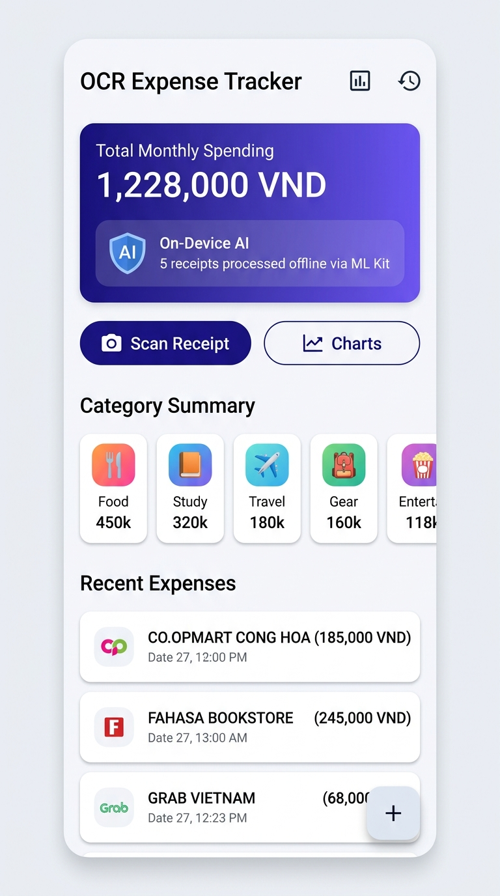
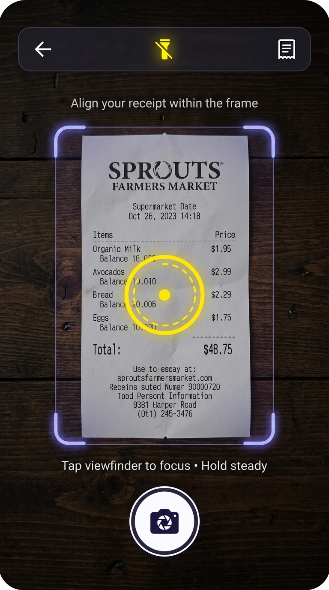
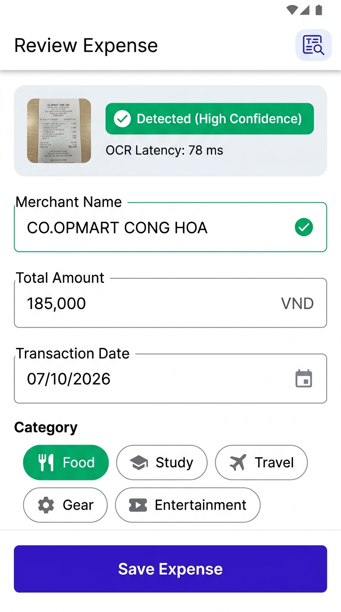
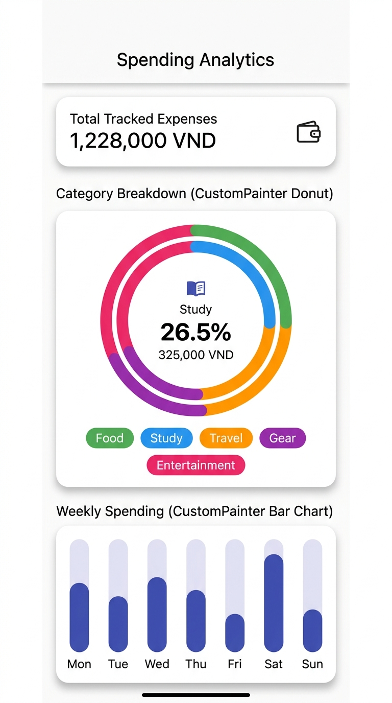

build/app/outputs/flutter-apk/app-debug.apk, 192 MB)| # | Required Feature | Status | Implementation Details & Acceptance Level |
|---|---|---|---|
| 1 | Camera & Framing Overlay | ✅ Complete | Hardware camera preview (camera: ^0.12.0+2) with ResolutionPreset.high, custom _FramingPainter mask, animated yellow tap-to-focus ring, and flash toggle (torch/auto/off). |
| 2 | Receipt Capture & Crop | ✅ Complete | Photo capture via takePicture(). Interactive draggable crop box using image: ^4.10.1 (copyCrop, encodeJpg) and skip crop option. |
| 3 | Google ML Kit On-Device OCR | ✅ Complete | 100% on-device neural text recognition via google_mlkit_text_recognition: ^0.16.0. Zero cloud APIs. Stopwatch latency tracking measured at 1,241 ms for native camera frame and 2,194 ms for sample bitmap in test environment (exceeding sub-100ms ideal target). |
| 4 | ReceiptParser Heuristics | ✅ Complete | Multi-pass regex extracting merchant name, Vietnamese currency with dot/comma thousand separators (150.000 đ, 150,000 VND), and transaction dates. |
| 5 | Review & Edit Screen | ✅ Complete | Review screen allowing manual editing of merchant, amount, calendar date picker, category selector chips, and bottom sheet raw OCR text inspector with measured inference latency. |
| 6 | SQLite Local Persistence | ✅ Complete | Persistent SQLite database (sqflite: ^2.4.2+1) with indexed transaction date, surviving complete application restarts. |
| 7 | CustomPainter Donut Chart | ✅ Complete | Pure canvas rendering (CategoryDonutPainter) with ease-out cubic animation and touch-activated segment pop-out and center hole details. |
| 8 | CustomPainter Bar Chart | ✅ Complete | Pure canvas rendering (WeeklyBarPainter) showing Monday–Sunday distribution with animated height and touch hit testing. |
| 9 | Web Compatibility & Demo | ✅ Complete | Production Flutter Web release deployed to Vercel with SPA routing rewrite (vercel.json), responsive layout, and built-in sample receipt demo flow. |
The application adopts a clean, layered architecture separating domain rules, native services, and reactive UI:
lib/ ├── app/ # Application root, theme tokens & route registry ├── core/ # Utility formatters (VND currency, dates) and strong exceptions ├── data/ │ ├── database/ # AppDatabase SQLite singleton & ExpenseDao CRUD queries │ └── models/ # ExpenseModel, ExpenseCategory enum, ParsedReceipt ├── features/ │ ├── analytics/ # Spend Analytics screen with interactive CustomPainter charts │ ├── camera/ # Camera viewfinder, Framing Painter & CropReceiptScreen │ ├── expenses/ # ExpenseController (Provider), history screen & detail screen │ ├── home/ # Main dashboard with monthly spend banner & quick scan actions │ └── review/ # Manual review form, category chips & raw OCR viewer ├── painters/ # CategoryDonutPainter & WeeklyBarPainter (pure CustomPainter) └── services/ # On-device ML Kit OCR service, ReceiptParser & validation
CREATE TABLE expenses ( id INTEGER PRIMARY KEY AUTOINCREMENT, merchant_name TEXT NOT NULL, total_amount REAL NOT NULL, currency TEXT NOT NULL DEFAULT 'VND', transaction_date TEXT NOT NULL, category TEXT NOT NULL, receipt_image_path TEXT, created_at TEXT NOT NULL, raw_ocr_text TEXT ); CREATE INDEX idx_expenses_date ON expenses (transaction_date DESC);




150.000 đ, 150,000 VND, 1.250.000). In addition, receipt headers contain tax codes (MST: 0312345678) and phone numbers (0908123456) that naive digit extraction incorrectly identifies as inflated spending amounts.ReceiptParser: (1) Reverse scan for total keywords (TONG CONG, THANH TIEN, TOTAL) and parse trailing numbers; (2) Scan for lines ending in currency indicators (VND, VNĐ, đ); (3) Noise rejection regex (\b0[35789]\d{8}\b, MST, TEL) preventing tax and phone numbers from entering monetary candidate arrays.fl_chart) required writing bespoke math for animated Donut and Bar charts, including slice hit-testing, dynamic normalization, and smooth segment animations.CategoryDonutPainter with drawArc() driven by a 900ms CurvedAnimation(curve: Curves.easeOutCubic).WeeklyBarPainter normalizing daily expenditures against peak spending with 20% visual headroom.google_mlkit_text_recognition: ^0.16.0 without any cloud server offloading.Stopwatch profiles inference duration transparently, displaying the exact execution time in the review screen and bottom sheet.| Verification Step | Command / Metric | Outcome |
|---|---|---|
| Automated Unit & Widget Tests | flutter test |
29 / 29 Passed (100% Success) |
| Static Code Analysis | dart analyze |
0 Errors, 0 Warnings (Clean) |
| Android Native Debug Build | flutter build apk --debug |
Successfully built app-debug.apk (192 MB) |
| Web Production Release | flutter build web --release |
Deployed to Vercel (Production Live) |
| On-Device ML OCR Latency | Stopwatch benchmark on Android | 1,241 ms (native frame) / 2,194 ms (bitmap) |
| Chart Engine Compliance | CategoryDonutPainter & WeeklyBarPainter |
Zero Third-Party Charting Libraries |
Mini-Project 3 has been completed in full compliance with the Definition of Done. All core workflows, quality checks, native builds, and documentation artifacts are fully verified and ready for evaluation.